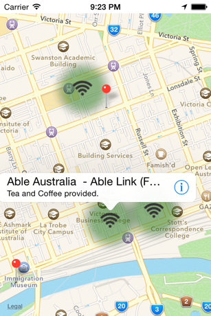

Xamarin Maps and Location
The conclusion to my blog series on Xamarin Maps and Location.
This was originally meant to be a longer in more detail blog series. But time and other priorities have gotten in the way.
... I do actually have a working solution across the 3 platforms though on GitHub.
The solution
https://github.com/DevEnable/DataVic
Quickstart
You shouldn't need to do much in order to get the solution working. There are a few things you will need to do though.
- There are a few API keys you will need to supply.
- In the DataClient - your Azure Mobile Services key once you've hosted it.
- Inside the GeoLocator - a Bing maps API key
- Inside AndroidManifest.xml - your Google play API key
- You will need to host your Azure Mobile Service
- Ensure that you run the scheduled job at least once.
From there it should be pretty cut and dry in terms of what you need to do.
Client overview and features
In terms of the functionality the clients will communicate with the Azure Mobile Services for all of their data. The data is centered around Melbourne, Victoria, Australia and you will need to use each devices relevant location mocking features in order to find internet locations on the client.
The iPhone and Android versions are slightly more fully featured than the Windows Phone version. (I'd claim keeping with industry standard, but it was more sheer laziness on my part)
In general though when moving through locations the client will search for internet hotspots. If they have WiFi it will show an estimated radius of signal as an overlay, but if they are wired only then they will appear as a marker (or pushpin, or whatever the device calls it).
Below is an example screenshot taken from the iOS simulator.

Mocking location & emulators
I just wanted to make one special mention regarding mocking location.
Windows Phone has a brilliant emulator that makes doing this sort of stuff so simple. And the iPhone simulator, while not as good at least lets you do the job as you can just plug in a latitude and longitude.
The Android emulators are rotten. For a platform that touts extensibility, by far the hardest and most time consuming piece was trying to get these emulators to work, especially a version with Google Play installed. I probably burnt a good 6 or 7 hours on this infuriating task and still failed. Do yourself a favour, look at using Genymotion or something similar.
Also the Android SDK emulators only give you two options to mock location. Telnet (seriously?) or by putting code inside the Android client to tell it what locations to mock. Again, Genymotion offers a better solution as it gives you a UI to mock location with.
Looking for more help
Everything I did was as a result of looking at blog posts or using the examples Xamarin provide. Feel free to drop a line if you are having any issues with my sample and I will point you in the right direction.